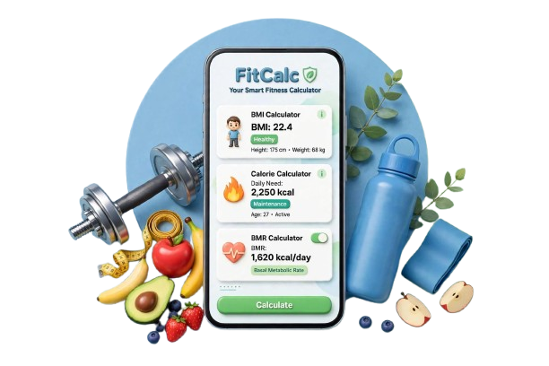

Our Services
Choose any of our free calculators below to get quick, easy-to-understand health and fitness estimates.
BMI Calculator
Calculate your Body Mass Index using your height and weight to understand your BMI category.
View CalculatorDaily Chlorine Calculator
Calculate the estimated chlorine amount needed for your swimming pool based on pool volume and chlorine levels.
View CalculatorBMR Calculator
Estimate your Basal Metabolic Rate to understand how many calories your body burns at rest.
View CalculatorWater Intake Estimator
Estimate your daily water intake needs based on your body weight and activity level.
View CalculatorHealthy Weight Range Estimator
Discover an estimated healthy weight range based on your height.
View CalculatorBody Fat Calculator
Estimate your body fat percentage using relevant body measurements.
View Calculator
About US
FitCalc is a free online platform designed to make fitness and health calculations simple and accessible. Our goal is to help people understand their bodies and make informed decisions through easy-to-use calculators.
Frequently Asked Questions
Quick answers to common questions about FitCalc and our calculators.
FitCalc is a free website that offers simple fitness and health calculators, including BMI, BMR, water intake, healthy weight range, body fat and pool chlorine.
Yes. All FitCalc calculators are completely free. You do not need to create an account or pay anything.
BMI is your weight in kilograms divided by your height in metres squared. The result places you in a category such as underweight, normal weight, overweight or obese. It is a general guide and does not measure body fat directly.
BMR (Basal Metabolic Rate) is the number of calories your body burns at rest to keep you alive, such as breathing and circulating blood. The calculator estimates it from your age, sex, height and weight.
Needs vary by body weight, activity, climate and health. Our Water Intake Estimator gives a personalised estimate, but you should also drink when you feel thirsty and follow your doctor's advice.
Our Body Fat Calculator uses body measurements such as height, waist and neck (and hips for women) to estimate your body fat percentage. For clinical accuracy, ask a health professional about a DEXA scan or similar test.
It uses your pool volume, current and target chlorine levels, and the strength of your chlorine product to estimate how much to add. Always follow the product label and pool safety instructions.
Results are estimates for general information only and are not medical advice. Please consult a qualified healthcare professional before making health decisions.